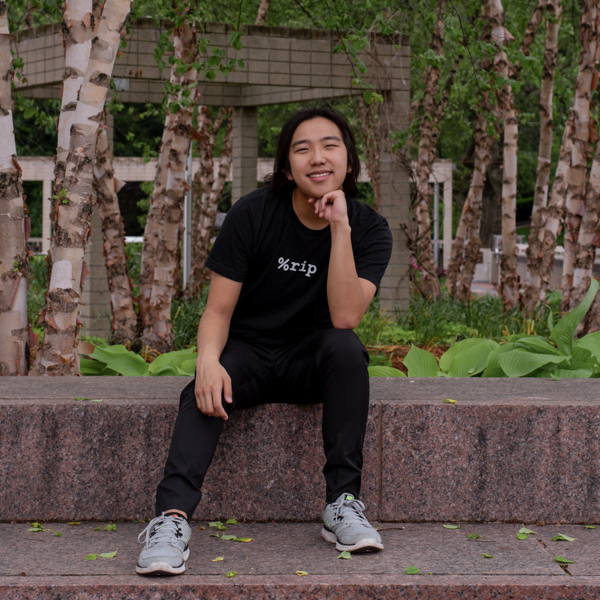

Thomas L. Chan
About

I hail from the small town of Wayland in Massachusetts. (There's actually a display server protocol named after it.) I went to the local high school and now attend Tufts University in Medford, MA.
I am currently a sophomore majoring in biology and computer science. I am interested in applications that involve the intersection of both my concentrations: either bioinformatics or computational biology.
I participate in many programming-related extracurriculars, such as JumboCode, dedicated to developing software for non-profits and federal organizations free of charge; Tufts Daily Web Team, which manages the Tufts daily newspaper's website; oSTEM, which focuses on LGBTQ+ individuals in the science, technology, engineering, and math community; and Tufts Computer Science Exchange (CSX), which coordinates the annual university hackathon PolyHack.
Outside of computer science, I am part of Tufts University Social Collective (TUSC), organizing campus-wide social events, and First-Year Orientation Community Service (FOCUS), leading freshmen in community service Projects before the school year begins. I also scoop at a local ice cream shop, J.P. Licks.
In my spare time, I practice digital photography and videography. Additionally, I enjoy reading feminist and critical race theory. You can find me in a café enjoying a warm cup of tea or coffee with friends.